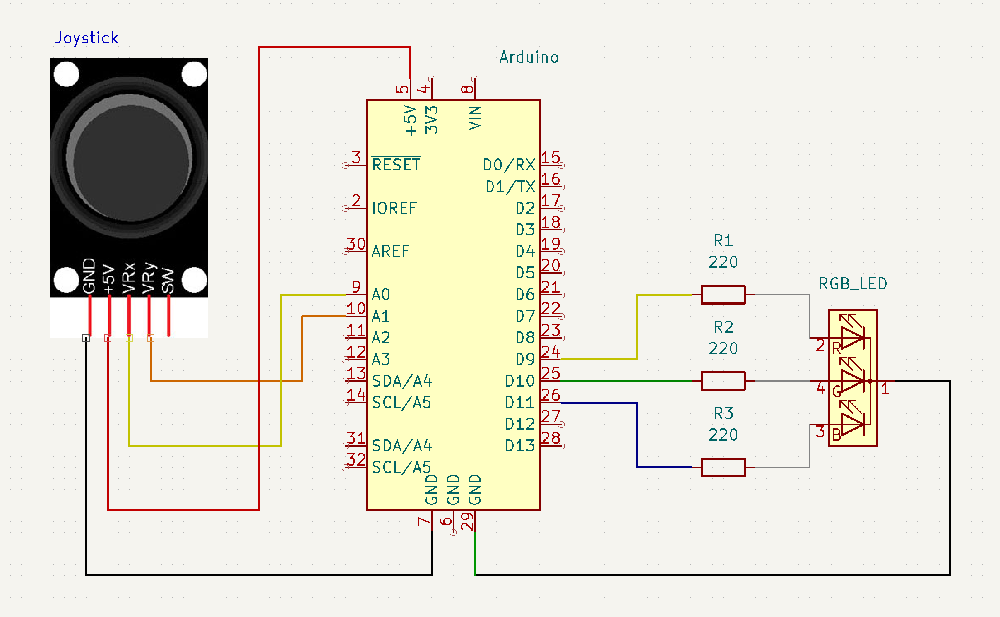
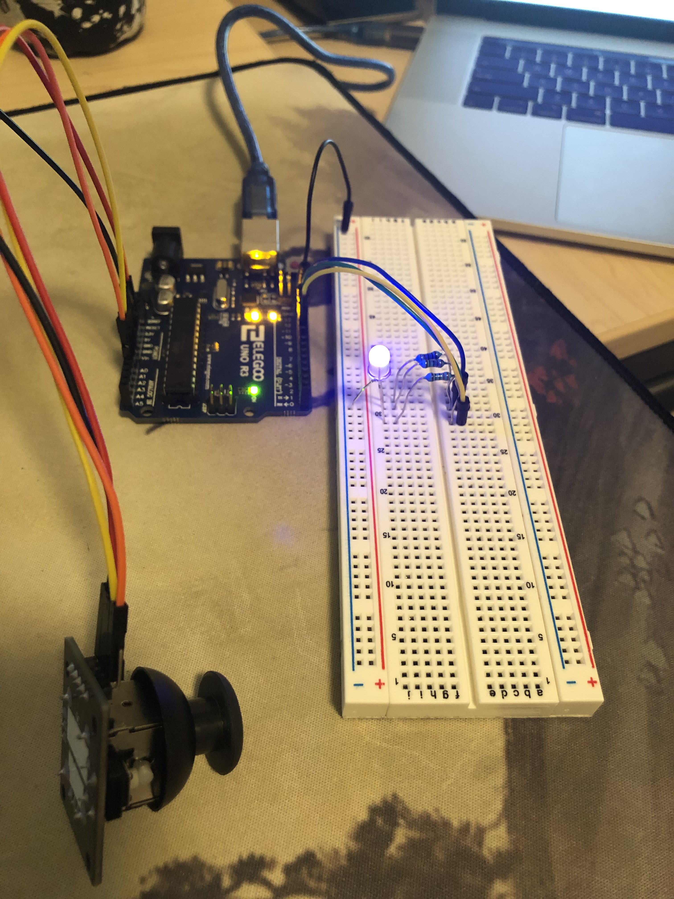
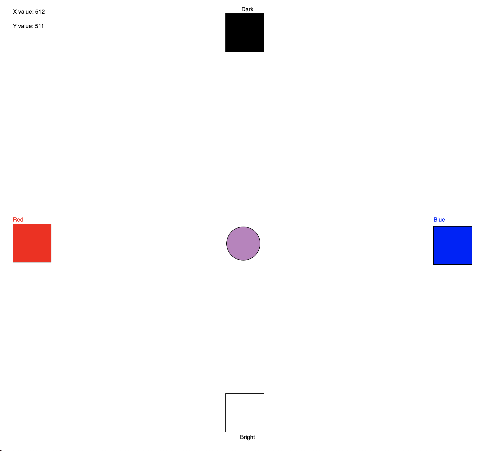

Richard's Assignment 6!

Here is all the documentation for assignment 6!

Couldn't find the symbol for joystick in KiCad so I just used an image. Hope its ok.
The set up uses the joystick controller and a RGB led. Users can move the joystick which will be reflected on the website,
indicated by a circle. This circle will also update its own colour to inform users which LED colour they will be picking. Users
can then press any key on the keyboard to update the LED colour. The X axis controls the red and blue intensities while the Y
axis controls the brightness of the LED.
The set up also uses a RGB LED so naturally it requires 3 resistors to keep the current in check.
R = V / I
R = (5 - 1.8) / 0.02 = 160 (Green and Red LEDs)
R = (5-3.4) / 0.02 = 80 (Blue LED)
I have chosen to use a 220 ohm resistor for all 3 legs as it will keep the current in the circuit under the
recommended amount, allowing the RGB LED to operate with good stability.
 
Breadboard and webpage setup.
Code for this joystick RGB led setup: Arduino Code
const int red = 11; // red color for RGB led
const int green = 10; // green color for RGB led
const int blue = 9; // blue color for RGB led
void setup() {
Serial.begin(9600); // Serial freq
Serial.setTimeout(10);
// Set all colour pins as output
pinMode(red, OUTPUT);
pinMode(green, OUTPUT);
pinMode(blue, OUTPUT);
}
// Feeds computer joystick position data, updates RGB LED colour based on
// joystick position.
void loop() {
// Saves joystick readings as X and Y values.
int xVal = analogRead(A0);
int yVal = analogRead(A1);
// Added new floats for brightness multiplier (0 - 1.0)
float bright;
float colourR;
float colourB;
// Prints an array which the computer will read and save
Serial.print("[");
Serial.print(xVal);
Serial.print(",");
Serial.print(yVal);
Serial.println("]");
// Maps the red and blue intensity of the RGB based on the joystick position. No green this time.
colourR = map(xVal, 0, 1023, 0, 255);
colourB = map(xVal, 0, 1023, 255, 0);
// If there is serial data from the computer, read it and if it is "1", do stuff.
if (Serial.available() > 0) {
int inByte = Serial.read();
if (inByte == 1) { // Saves bright as a decimal between 0 - 1.0. This acts as the brightness modifier.
bright = float(yVal / 1023.0);
// Writes the colour intensities out based on the colours and brightness.
analogWrite(red, colourR * bright);
analogWrite(blue, colourB * bright);
analogWrite(green, 0);
}
}
Code for the p5.js side:
var dataIn; //some data coming in over serial!
var dataArray = []; // Empty array
function setup() {
serial = new p5.SerialPort(); // make a new instance of the serialport library
serial.on('list', printList); // set a callback function for the serialport list event
serial.on('connected', serverConnected); // callback for connecting to the server
serial.on('open', portOpen); // callback for the port opening
serial.on('data', serialEvent); // callback for when new data arrives
serial.on('error', serialError); // callback for errors
serial.on('close', portClose); // callback for the port closing
serial.list(); // list the serial ports
serial.open('/dev/tty.usbmodem14401'); // opens this serial port
createCanvas(1023, 1023);
//background(0x08, 0x16, 0x40);
}
// get the list of ports:
function printList(portList) {
// portList is an array of serial port names
for (var i = 0; i < portList.length; i++) {
// Display the list the console:
print(i + " " + portList[i]);
}
}
function serverConnected() {
print('connected to server.');
}
function portOpen() {
print('the serial port opened.')
}
function serialError(err) {
print('Something went wrong with the serial port. ' + err);
}
function portClose() {
print('The serial port closed.');
}
// If there are serial data, read line by line and save as array.
function serialEvent() {
if (serial.available()) {
dataIn = serial.readLine();
var newArray;
try {
newArray = JSON.parse(dataIn);
}
catch(err) {
//console.log(Error);
}
if (typeof(newArray) == 'object') {
dataArray = newArray;
}
}
}
// Pressing any key writes 1 out to arduino. This updates the colour on the RGB LED.
function keyPressed() {
serial.write(1);
}
// Draws the webpage based on the read data. Displays X and Y cords of the joystick circle,
// which is controlled by moving the joystick. Has 4 squares labelled accordingly. Moving
// the joystick circle near any square changes the circle colour.
function draw() {
// Background and text
background(255);
fill(0);
text("X value: " + dataArray[0], 30, 30);
text("Y value: " + dataArray[1], 30, 60);
// Top square
fill(0);
square(475, 30, 80);
text("Dark", 508, 25);
// Bottom square
fill(255);
square(475, 825, 80);
fill(0);
text("Bright", 505, 920);
// Left square
fill(255, 0, 0);
square(30, 470, 80);
text("Red", 30, 465);
// Right square
fill(0, 0, 255);
square(910, 475, 80);
text("Blue", 910, 465);
// Joystick circle settings, colours, and transparency (brightness)
let blue = map(dataArray[0], 0, 1023, 255, 0);
let red = map(dataArray[0], 0, 1023, 0, 255);
let bright = map(dataArray[1], 0, 1023, 0, 255);
circleColour = color(blue, 0, red);
circleColour.setAlpha(bright);
fill(circleColour);
ellipse(dataArray[0], dataArray[1], 70, 70);
}